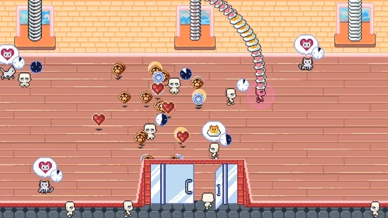

Increcat Café
Manage a cat café, raise cats and surpass Meowlon Whiskers.
Casual incremental · Programmer · Team of 2 · Godot · In development
Gameplay
-
Customers -
Busy café
Screenshots



Manage a cat café, raise cats and surpass Meowlon Whiskers.
Casual incremental · Programmer · Team of 2 · Godot · In development
